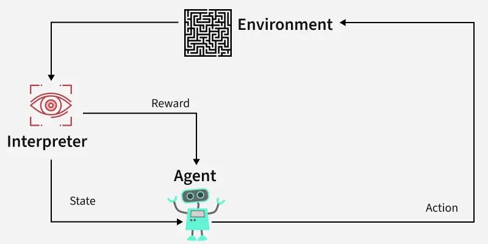
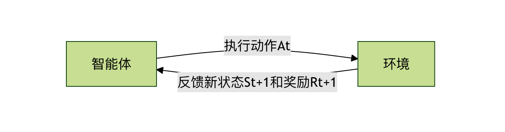
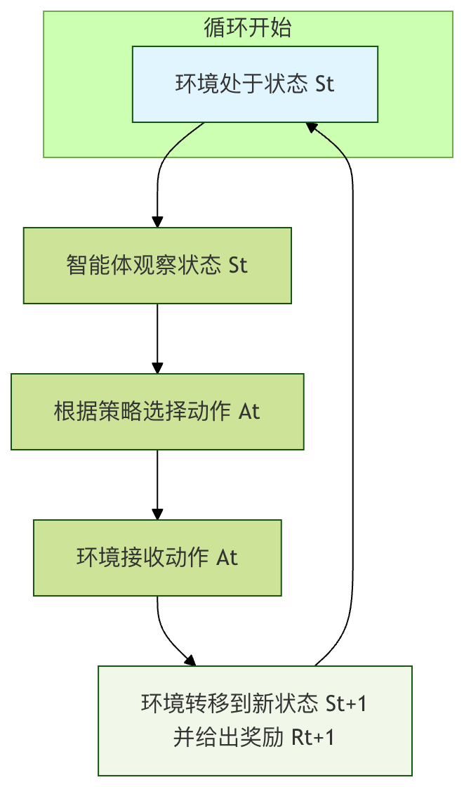
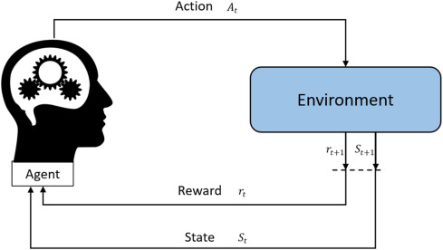

強化学習の基本フレームワーク
想像してみてください。あなたが子犬に「おすわり」という指示を教えているとします。あなたは「おすわり」という動作の一つ一つの筋肉の動かし方を直接教えるのではなく、次のようにするでしょう。
- あなたは「おすわり」という合図を出します。
- 子犬は何らかの動作を試みます（おすわりかもしれませんし、伏せや回転かもしれません）。
- もしおすわりをしたら、あなたはすぐにおやつを報酬として与えます。
- 間違えた場合は、報酬を与えないか、軽く「違う」という合図を送ります。
- 何度も試行錯誤を重ねるうちに、子犬は「おすわり」と聞いておすわりの動作をすればおやつがもらえる、と次第に理解します。こうしてその指示を覚えるのです。
強化学習とは、コンピュータ（またはエージェント）に、この子犬のように、環境と相互作用しながら、得られる報酬や罰に基づいて、長期的な目標を達成するための一連の意思決定の仕方を学習させることです。
これは私たちがよく知る教師あり学習（正解のある「先生」）や教師なし学習（データの内在構造を見つける）とは本質的に異なります。強化学習は経験から学ぶことであり、その核心は試行錯誤と遅延報酬。
強化学習の核心要素
この学習プロセスを形式的に記述するために、いくつかの核心的な概念を導入します。それらは一緒になって強化学習の基本フレームワークを構成します。
エージェントと環境
これは強化学習において最も基本的な相互作用のペアです。
- エージェント：学習の主体であり、意思決定を行う実体です。上の例では、子犬がエージェントです。コンピュータ上では、アルゴリズム、プログラム、ロボットなどが該当します。
- 環境：エージェントが置かれている外部世界であり、エージェントはこれと相互作用します。子犬にとっての環境は、あなた、おやつ、床などすべての外部のものです。環境はエージェントの行動を受け取り、新しい状態と報酬を返します。

それらの関係は継続的なループです：エージェントが環境を観察する -> 行動をとる -> 環境が新しい状態と報酬を返す -> エージェントが再び観察する...

状態、行動と報酬
これらは、各相互作用を記述する三つの重要な情報です。
- 状態：ある時点での環境状況の完全な記述です。例えば、子犬に教える例では、状態には「子犬が立っている」「あなたがおやつを持っている」「あなたがちょうど『おすわり』と言った」などが含まれます。状態はエージェントが意思決定を行うための根拠となります。
- 行動：エージェントがある状態でとりうる選択肢です。子犬の場合、行動集合は {おすわり、伏せ、立つ、回転...} などです。
- 報酬：環境がエージェントの行動の後にエージェントへ返すスカラー信号です。それは何が良くて何が悪いかを定義します。報酬はエージェントの学習における唯一の羅針盤です。子犬におやつを与えるのは正の報酬 (+1)、「違う」と言うのは軽い負の報酬 (-0.1) と見なせます。
方策
方策はエージェントの頭脳または行動規範です。任意の与えられた状態において、エージェントがどの行動をとるべきかを定義します。
方策は単純なルックアップテーブル（参照表）関数の場合もあれば、複雑なディープニューラルネットワークの場合もあります。強化学習の究極の目標は、最適方策を見つけ、エージェントが環境から得る長期的な累積報酬を最大化することです。
- 例：簡単な方策の例としては、「状態が『おすわり』という指示を聞いた状態なら、90%の確率でおすわり行動を選択し、10%の確率で他の行動を選択する」というものが考えられます。
価値関数
報酬はエージェントに現在の行動の即時的な良し悪しを教えますが、エージェントはより長期的なリターンを考慮する必要があります。価値関数は、この長期的なリターンを測定するためのツールです。
それは次の問いに答えます：「現在の状態から始めて、ある方策に従い続けた場合、私が期待して得られる総報酬はどれだけか？」
- 状態価値関数 V(s)：状態
sにおいて、現在の方策に従った場合の長期的な価値を測定します。 - 行動価値関数 Q(s, a)：状態
sにおいて、特定の行動を実行したa後、現在の方策に従った場合の長期的な価値を測定します。これは行動の選択を直接導くことができるため、状態価値関数よりも一般的に使われます。
なぜ価値関数が必要なのでしょうか？チェスのゲームを想像してください。相手のポーンを取ると即時の小さな報酬が得られますが、そのせいで10手後に「チェックメイト」となり大きな負の報酬を得るかもしれません。価値関数は計算と予測を通じて、エージェントがこのような目先の小さな利益に目がくらみ、全体を失う行動を避けるのに役立ちます。
核心的な相互作用プロセス：マルコフ決定過程
強化学習問題は通常、マルコフ決定過程（MDP）としてモデル化されます。この名前は複雑に聞こえますが、実際には上で述べた要素を数学的な形で整理し、エージェントと環境の相互作用を記述する標準的なフレームワークにすぎません。
MDP の核心的な考え方は次のとおりです：次の状態と報酬は、現在の状態と現在とった行動のみに依存し、それ以前の履歴には依存しない（すなわちマルコフ性）。
1回の完全な MDP の相互作用サイクルは次のとおりです：

- ある時刻
tにおいて、環境は状態S_t。 - にあります。エージェントはこの状態を観察します。
- エージェントはその方策
πに基づいて、行動A_t。 - を選択します。環境はこの行動を受け取ります。
- 環境はその内部の動的規則に従って、次の状態
S_{t+1}に遷移し、スカラー報酬R_{t+1}を生成してエージェントに返します。 - 時間ステップが進み（
t = t+1）、新しいサイクルが始まります。

エージェントの目標は、このサイクルを繰り返し経験することで、方策π*を学習し、任意の初期状態から始めた場合に得られる累積報酬の期待値（すなわちリターン）を最大化することです。
簡単なコード例：グリッドワールド
これらの概念を具体化するために、古典的なグリッドワールドの例を使いましょう。4x4 のグリッドがあり、エージェントは開始地点Sから出発し、目標はゴール地点Gに到達することです。障害物#にぶつかると失敗となり、各ステップには小さなペナルティがあります（できるだけ早くゴールに到達することを促します）。
S . . . . # . . . . # . . . . G
- 状態：各グリッドの座標、例えば (0,0), (0,1)... (3,3) です。合計16個の状態があります。
- 行動：{上、下、左、右}
- 報酬：
- ゴールに到達：
G： +10 - 障害物にぶつかる：
#またはグリッドの外に出る： -5 - その他の通常の移動： -0.1 （効率的な経路を奨励）
- ゴールに到達：
- 方策：各状態（マス）において、どの方向に進むべきかを記録したテーブルを学習する必要があります。
以下は、このグリッドワールドの最適経路を学習するための、極度に簡略化した Q-learning（古典的な強化学習アルゴリズム）の擬似コードのデモです。
実例
import random
from typing import Dict, List, Tuple
# ====================== 1. 環境シミュレーション（グリッドワールド） ======================
class GridWorldEnv:
"""Q-Learningのデモ用のシンプルなグリッドワールド環境"""
def __init__(self, grid_size: Tuple[int, int] = (5, 5),
start_pos: Tuple[int, int] = (0, 0),
goal_pos: Tuple[int, int] = (4, 4),
obstacle_pos: List[Tuple[int, int]] = [(1, 1), (2, 2), (3, 1)]):
self.grid_size = grid_size
self.start_pos = start_pos
self.goal_pos = goal_pos
self.obstacle_pos = obstacle_pos
self.current_pos = start_pos
# 行動定義：0-上, 1-下, 2-左, 3-右
self.actions = ['up', 'down', 'left', 'right']
self.num_actions = len(self.actions)
def reset(self) -> int:
"""環境をリセットし、初期状態のインデックスを返す"""
self.current_pos = self.start_pos
return self.pos_to_state(self.current_pos)
def pos_to_state(self, pos: Tuple[int, int]) -> int:
"""座標位置を状態インデックスに変換する"""
return pos[0] * self.grid_size[1] + pos[1]
def state_to_pos(self, state: int) -> Tuple[int, int]:
"""状態インデックスを座標位置に変換する"""
return (state // self.grid_size[1], state % self.grid_size[1])
def random_action(self) -> int:
"""ランダムに行動を選択する（探索）"""
return random.randint(0, self.num_actions - 1)
def action_to_direction(self, action: int) -> str:
"""行動インデックスを方向名に変換する"""
return self.actions[action]
def step(self, action: int) -> Tuple[int, float, bool]:
"""
行動を実行し、(next_state, reward, done) を返す
最適化ポイント：障害物の報酬が発動しないバグを修正し、ロジックの判断を簡素化
"""
x, y = self.current_pos
# 行動に基づいて位置を更新
if action == 0: # 上
x = max(0, x - 1)
elif action == 1: # 下
x = min(self.grid_size[0] - 1, x + 1)
elif action == 2: # 左
y = max(0, y - 1)
elif action == 3: # 右
y = min(self.grid_size[1] - 1, y + 1)
# 障害物にぶつかったかどうかを確認（核心の修正：障害物にぶつかったかどうかを先に記録し、その後で位置を処理）
new_pos = (x, y)
hit_obstacle = False # 障害物にぶつかったかどうかをマーク
if new_pos in self.obstacle_pos:
hit_obstacle = True # 障害物の衝突状態を記録
new_pos = self.current_pos # 障害物にぶつかった場合は位置を変更しない
self.current_pos = new_pos
next_state = self.pos_to_state(new_pos)
# 報酬を計算（事前に記録したhit_obstacleに基づき、元のロジックの矛盾を修正）
if new_pos == self.goal_pos:
reward = 100.0 # ゴールに到達、大きな報酬
done = True
elif hit_obstacle: # マークに基づいて判断（変更後のnew_posではなく）
reward = -50.0 # 障害物に接触、ペナルティ
done = False
else:
reward = -1.0 # 各ステップに小さなペナルティ、できるだけ早くゴールに到達するよう促す
done = False
return next_state, reward, done
# ====================== 2. Q-Learning メインプログラム ======================
if __name__ == "__main__":
# 最適化ポイント1：乱数シードを固定し、実験結果の再現性を保証
random_seed = 42
random.seed(random_seed)
np.random.seed(random_seed)
# 環境を初期化
env = GridWorldEnv(
grid_size=(5, 5), # 5x5グリッド
start_pos=(0, 0), # 開始地点
goal_pos=(4, 4), # ゴール地点
obstacle_pos=[(1,1), (2,2), (3,1)] # 障害物の位置
)
# 状態数を計算
num_states = env.grid_size[0] * env.grid_size[1]
num_actions = env.num_actions
# Qテーブル（行動価値関数）を初期化、形状は [状態数, 行動数]
Q_table = np.zeros([num_states, num_actions])
# ハイパーパラメータを定義
learning_rate = 0.1 # 学習率
discount_factor = 0.9 # 割引率
epsilon = 0.1 # 探索率
total_episodes = 1000 # トレーニングのエピソード数
# トレーニングプロセス
for episode in range(total_episodes):
state = env.reset() # 環境を開始地点にリセットし、初期状態 S を取得
done = False # このエピソードが終了したかどうかをマーク
total_reward = 0 # このエピソードの総報酬を記録
while not done:
# 1. ε-グリーディ方策で行動を選択
if random.uniform(0, 1) < epsilon:
action = env.random_action() # 探索：ランダムに行動を選択
else:
# 活用：Q値が最も高い行動を選択、同点の場合を処理
q_values = Q_table[state]
max_q = np.max(q_values)
best_actions = np.where(q_values == max_q)[0]
action = random.choice(best_actions) # 同点の場合はランダムに1つ選択
# 2. 行動を実行し、環境と相互作用
next_state, reward, done = env.step(action)
total_reward += reward
# 3. Qテーブルを更新（核心：Q-Learningの公式）
# Q(S, A) = Q(S, A) + α * [ R + γ * max(Q(S', a')) - Q(S, A) ]
old_value = Q_table[state, action]
next_max = np.max(Q_table[next_state]) # 次の状態の最大Q値
# 目標Q値を計算
target = reward + discount_factor * next_max
# Q値を更新
new_value = old_value + learning_rate * (target - old_value)
Q_table[state, action] = new_value
# 4. 次の状態へ移行
state = next_state
# 100エピソードごとにトレーニングの進捗を出力
if (episode + 1) % 100 == 0:
print(f"Episode {episode + 1}/{total_episodes}, Total Reward: {total_reward:.1f}")
# ====================== 3. 最適方策の抽出（出力形式を最適化し、より直感的に） ======================
policy: Dict[int, str] = {}
print("\n=== 学習完了後の最適方策（グリッド形式で表示）===)
# 最適化ポイント2：グリッド形状で出力し、グリッド全体の方策を直感的に表示
grid_rows, grid_cols = env.grid_size
for row in range(grid_rows):
row_str = []
for col in range(grid_cols):
pos = (row, col)
state = env.pos_to_state(pos)
if pos in env.obstacle_pos:
row_str.append(" 障害物 ")
elif pos == env.goal_pos:
row_str.append(" ゴール ")
elif pos == env.start_pos:
# 開始地点とその最適行動を同時にマーク
best_action_idx = np.argmax(Q_table[state])
best_action = env.action_to_direction(best_action_idx)
row_str.append(f" 開始地点({best_action}) ")
else:
best_action_idx = np.argmax(Q_table[state])
best_action = env.action_to_direction(best_action_idx)
policy[state] = best_action
row_str.append(f" {best_action} ")
print("|".join(row_str))
# ====================== 4. 最適方策のテスト ======================
print("\n=== 最適方策のテスト ===")
state = env.reset()
done = False
steps = 0
path = [env.state_to_pos(state)]
while not done and steps < 50: # 最大50ステップ、無限ループを防止
best_action_idx = np.argmax(Q_table[state])
next_state, reward, done = env.step(best_action_idx)
current_pos = env.state_to_pos(next_state)
path.append(current_pos)
state = next_state
steps += 1
print(f"経路: {path}")
print(f"ゴール到達までのステップ数: {steps}")
print(f"ゴールに到達したか: {env.current_pos == env.goal_pos}")
コード解説：
Q_tableは中核となる行動価値関数であり、その形状は状態数、行動数（例では25×4で、5×5グリッドの25状態、上下左右の4行動に対応）。Q_table[s, a]は状態s（グリッド位置のインデックス）において行動a（0-3は上下左右に対応）を実行したときの長期的価値を表し、初期値はすべて0で、トレーニングを通じて徐々に更新される。env.step(action)マルコフ決定過程（MDP）の核となる相互作用ロジックをシミュレート：行動インデックスを入力すると、まずエージェントのグリッド位置を更新し（障害物に接触した場合は位置が変わらない）、次に3要素のタプルを返す(next_state, reward, done)——next_stateは新しい状態のインデックス、rewardは差別化された報酬（ゴール+100、障害物-50、各ステップ-1）、doneはゴールに到達したかどうかを示す（このエピソードの終了）。- Q-Learning の核心的な更新式
Q(S,A) = Q(S,A) + α * [R + γ * max(Q(S', a')) - Q(S,A)]はコード内で分解して実装されている：まず現在のQ値を取得しold_value、次に次の状態の最大Q値を計算しnext_max、続いて目標価値を算出しtarget = 奖励 + 折扣因子 × 下一状态最大Q值、最後に学習率を用いてα旧値と目標値を混合して更新後のQ値を得ることで、行動価値の反復的な修正を実現している。 epsilon（探索率）はε-グリーディ方策を通じて「活用」と「探索」のバランスを取る：epsilonの確率でランダムに行動を選択し（未知の探索）、1-epsilonの確率で現在の状態におけるQ値が最大の行動を選択する（既知の最適を活用）；コードはさらにQ値が同点の場合も最適化しており——複数の行動のQ値が同じ場合はその中からランダムに1つ選択し、単一選択による方策の固定化を防いでいる。- コードはさらに状態とグリッド位置の双方向マッピング（
pos_to_state/state_to_pos）、行動と方向名の変換（action_to_direction）、およびトレーニング後の方策抽出とテストを実装している：すべての状態を走査し、各状態でQ値が最大の行動を最適方策として取得し、その方策で開始地点からゴールまでの経路とステップ数を検証する。
Episode 100/1000, Total Reward: 93.0 Episode 200/1000, Total Reward: 90.0 Episode 300/1000, Total Reward: 92.0 Episode 400/1000, Total Reward: 90.0 Episode 500/1000, Total Reward: 93.0 Episode 600/1000, Total Reward: 93.0 Episode 700/1000, Total Reward: 91.0 Episode 800/1000, Total Reward: 93.0 Episode 900/1000, Total Reward: 93.0 Episode 1000/1000, Total Reward: 93.0 === 学习完成后的最优策略 === 位置 (0, 0): 最优动作 = right 位置 (0, 1): 最优动作 = right 位置 (0, 2): 最优动作 = down 位置 (0, 3): 最优动作 = down 位置 (0, 4): 最优动作 = down 位置 (1, 0): 最优动作 = up 位置 (1, 1): 最优动作 = 障碍物 位置 (1, 2): 最优动作 = right 位置 (1, 3): 最优动作 = down 位置 (1, 4): 最优动作 = left 位置 (2, 0): 最优动作 = down 位置 (2, 1): 最优动作 = down 位置 (2, 2): 最优动作 = 障碍物 位置 (2, 3): 最优动作 = down 位置 (2, 4): 最优动作 = down 位置 (3, 0): 最优动作 = down 位置 (3, 1): 最优动作 = 障碍物 位置 (3, 2): 最优动作 = right 位置 (3, 3): 最优动作 = right 位置 (3, 4): 最优动作 = down 位置 (4, 0): 最优动作 = right 位置 (4, 1): 最优动作 = right 位置 (4, 2): 最优动作 = right 位置 (4, 3): 最优动作 = right 位置 (4, 4): 最优动作 = 终点 === 测试最优策略 === 路径: [(0, 0), (0, 1), (0, 2), (1, 2), (1, 3), (2, 3), (3, 3), (3, 4), (4, 4)] 到达终点步数: 8 是否到达终点: True
まとめと実践への考察
強化学習の基本的な枠組みは次のようにまとめられる：エージェントは環境とマルコフ決定過程的な相互作用を行い、得られた報酬シグナルに基づいて方策を継続的に最適化し（通常は価値関数の学習と更新によって実現）、最終的な目標は長期的な累積報酬の最大化である。
| 概念 | たとえ | 強化学習における役割 |
|---|---|---|
| エージェント | 学習する子犬/将棋を指すAI | 意思決定の主体であり、学習アルゴリズムを実行する |
| 環境 | トレーナー/盤のルール | 状態と報酬のフィードバックを提供する外部システム |
| 状態 | 子犬の姿勢/盤面 | エージェントが意思決定を行うための現在の情報の根拠 |
| 行動 | おすわり/駒を動かす | エージェントが選択できるもの |
| 報酬 | おやつ/勝敗の結果 | 行動の良し悪しを評価する即時シグナルであり、学習のコンパス |
| 方策 | 子犬が覚えた指令への反応 | 状態から行動へのマッピング規則であり、学習の目標 |
| 価値関数 | 状況に対する長期的な判断 | 状態または行動の長期的価値を評価し、方策最適化の基盤となる |
クリックしてノートを共有
ノートは本記事の内容の拡張である必要があります！
記事の投稿はこちらをクリック
登録招待コードの取得方法
ノートを共有する前にログインが必要です！
登録招待コードの取得方法